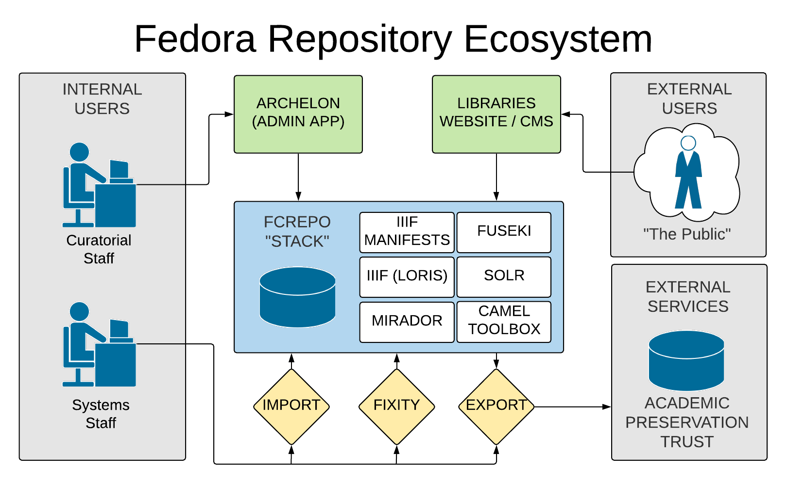

Open Repositories 2019

<foo>
premis:hasFixity
<foo#fixity/1511905404576> .
<foo#fixity/1511905404576>
a premis:EventOutcomeDetail, premis:Fixity ;
premis:hasSize "379535"^^xsd:long ;
premis:hasMessageDigest <urn:sha1:3c..db> ;
premis:hasMessageDigestAlgorithm "SHA-1" ;
premis:hasEventOutcome "BAD_SIZE" ;
premis:hasEventOutcome "BAD_CHECKSUM" .<foo> a premis:Event, audit:ExternalEvent,
prov:InstantaneousEvent ;
premis:hasEventDateTime "{timestamp}" ;
premis:hasEventType
<http://id.loc.gov/.../eventType/fix> ;
premis:hasEventRelatedObject <{target}> ;
premis:hasEventOutcome earl:passed ;
premis:hasEventOutcomeDetail
<{premis:Fixity resource}> .
{premis:Fixity resource from message body}
Joshua A. Westgard
University of Maryland Libraries
westgard@umd.edu